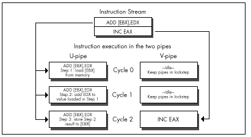
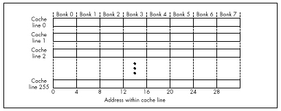

| Previous | Table of Contents | Next |
You may wonder why anyone would bother breaking ADD [MemVar],EAX into three instructions, given that this instruction can go through either pipe with equal ease. The answer is that while the memory-accessing instructions other than MOV, PUSH, and POP listed in Table 20.1 (that is, INC/DEC [mem], ADD/SUB/XOR/AND/OR/CMP/ADC/SBB reg,[mem], and ADD/SUB/XOR/AND/OR/CMP/ADC/SBB [mem],reg/immed) can be paired, they do not provide the 100 percent overlap that we seek. If you look at Tables 20.1 and 20.2, you will see that instructions taking from 1 to 3 cycles can pair. However, any pair of instructions goes through the two pipes in lockstep. This means, for example, that if ADD [EBX],EDX is going through the U-pipe, and INC EAX is going through the V-pipe, the V-pipe will be idle for 2 of the 3 cycles that the U-pipe takes to execute its instruction, as shown in Figure 20.4. Out of the theoretical 6 cycles of work that can be done during this time, we actually get only 4 cycles of work, or 67 percent utilization. Even though these instructions pair, then, this sequence fails to make maximum use of the Pentium’s horsepower.
The key here is that when two instructions pair, both execution units are tied up until both instructions have finished (which means at least for the amount of time required for the longer of the two to execute, plus possibly some extra cycles for pairable instructions that can’t fully overlap, as described below). The logical conclusion would seem to be that we should strive to pair instructions of the same lengths, but that is often not correct.
|
The actual rule is that we should strive to pair one-cycle instructions (or, at most, two-cycle instructions, but not three-cycle instructions), which in turn leads to the corollary that we should, in general, use mostly one-cycle instructions when optimizing. |

Figure 20.4 Lockstep execution and idle time in the V-pipe.
Here’s why. The Pentium is fully capable of handling instructions that use memory operands in either pipe, or, if necessary, in both pipes at once. Each pipe has its own write FIFO, which buffers the last few writes and takes care of writing the data out while the Pentium continues processing. The Pentium also has a write-back internal data cache, so data that is frequently changed doesn’t have to be written to external memory (which is much slower than the cache) very often. This combination means that unless you write large blocks of data at a high speed, the Pentium should be able to keep up with both pipes’ memory writes without stalling execution.
The Pentium is also designed to satisfy both pipes’ needs for reading memory operands with little waiting. The data cache is constructed so that both pipes can read from the cache on the same cycle. This feat is accomplished by organizing the data cache as eight-banked memory, as shown in Figure 20.5, with each 32-byte cache line consisting of 8 dwords, 1 in each bank. The banks are independent of one another, so as long as the desired data is in the cache and the U- and V-pipes don’t try to read from the same bank on the same cycle, both pipes can read memory operands on the same cycle. (If there is a cache bank collision, the V-pipe instruction stalls for one cycle.)
Normally, you won’t pay close attention to which of the eight dword banks your paired memory accesses fall in—that’s just too much work—but you might want to watch out for simultaneously read addresses that have the same values for address

Figure 20.5 The Pentium’s eight bank data cache.
bits 2, 3, and 4 (fall in the same bank) in tight loops, and you should also avoid sequences like
mov bl,[esi] mov bh,[esi+1]
because both operands will generally be in the same bank. An alternative is to place another instruction between the two instructions that access the same bank, as in this sequence:
mov bl,[esi] mov edi,edx mov bh,[esi+1]
By the way, the reason a code sequence that takes two instructions to load a single word is attractive in a 32-bit segment is because it takes only one cycle when the two instructions can be paired with other instructions; by contrast, the obvious way of loading BX
mov bx,[esi]
takes 1.5 to two cycles because the size prefix can’t pair, as described below. This is yet another example of how different Pentium optimization can be from everything we’ve learned about its predecessors.
The problem with pairing non-single-cycle instructions arises when a pipe executes an instruction other than MOV that has an explicit memory operand. (I’ll call these complex memory instructions. They’re the only pairable instructions, other than branches, that take more than one cycle.) We’ve already seen that, because instructions go through the pipes in lockstep, if one pipe executes a complex memory instruction such as ADD EAX,[EBX] while the other pipe executes a single-cycle instruction, the pipe with the faster instruction will sit idle for part of the time, wasting cycles. You might think that if both pipes execute complex instructions of the same length, then neither would lie idle, but that turns out to not always be the case. Two two-cycle instructions (instructions with register destination operands) can indeed pair and execute in two cycles, so it’s okay to pair two instructions such as these:
add esi,[SourceSkip] ;U-pipe cycles 1 and 2 add edi,[DestinationSkip] ;V-pipe cycles 1 and 2
| Previous | Table of Contents | Next |